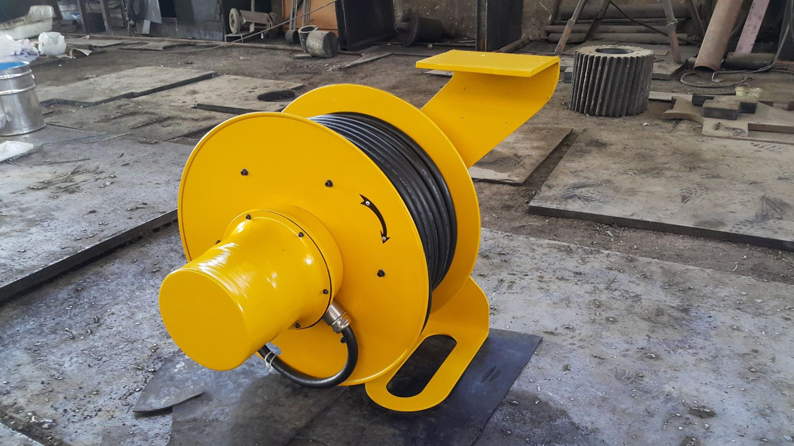

← Alle Projekte
Klärbecken eines Stahlwerks · CHARKH GARDOON Co.
Elektrohydraulischer Greifer
Ein elektrohydraulischer Greifer für das Klärbecken eines Stahlwerks — von der Konstruktion der Mechanik und des Hydraulikkreises über die Fertigung und Prüfung bis zur Montage.
MechanikkonstruktionHydraulikkreisFertigung
Leistungsumfang
- Konstruktion und Fertigung der Mechanik und des Hydraulikkreises.
- Prüfung bearbeiteter Bauteile auf Einhaltung der Qualitätsanforderungen.
- Konstruktion, Bau und Montage von Kabeltrommelsystemen.
Bilder

